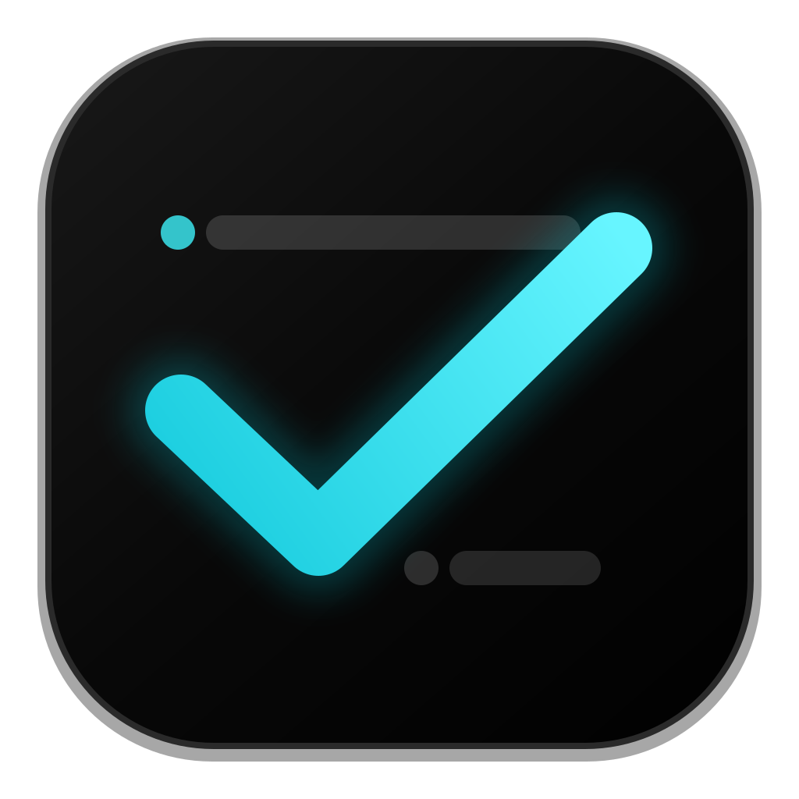

BCTask
A lightweight, native todo app that lives in your Mac's menu bar.
- List and kanban views
- A free-form note on every task, with clickable links
- Pin any task in an always-on-top panel
- Completed tasks archive themselves after an hour
git clone https://github.com/gustavocaiano/bctask.git
cd bctask
scripts/install-app.sh